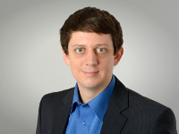

Daniel Jung, PhD
Born in Wildeshausen, Germany, 9 October
1983.
Research interests
- Cross-sectoral energy system modelling
- Interdependencies between gas and
electricity transmission systems
- Risk preparedness in the energy sector
- Security of energy supply
- Critical infrastructure protection
- Electricity and gas transmission system modelling
- Anderson localization, metal-insulator transitions
Work experience
- 01.2017 –
-
Research Fellow,
European Commission, Joint Research Centre (EC-JRC), Petten,
Netherlands.
Directorate C
Energy, Transport and Climate,
Unit C.3 Energy
Security, Distribution and Markets.
- 10.2014 – 03.2016, 12.2016
-
Postdoctoral fellow,
Jacobs University
Bremen, Germany.
BMBF project
Collective Nonlinear Dynamics in Complex
Electricity Grids
(CoNDyNet),
http://condynet.de/.
Study
- 01.2011 – 08.2014
-
PhD in physics,
Jacobs University
Bremen, Germany.
PhD thesis:
Impact of Local Magnetic Moments on the
Anderson Metal-Insulator Transition.
PDF
Supervisor:
Prof.
habil. Stefan Kettemann.
- 10.2004 – 10.2010
-
General physics, University
of Bremen, Germany.
Diploma thesis:
Numerische Untersuchungen zum
Lokalisierungsproblem mittels Tight-Binding-Modellen und
direkter Diagonalisierung.
PDF
Supervisor:
Prof. Dr. Gerd Czycholl.
Publications
Data packages
- September 2015
-
Talha
Nisar,
Daniel Jung, and
Stefan
Kettemann,
Pakistani Transmission
Grid Model (PTGM), version 1.0, doi:10.13140/RG.2.2.12560.40963.
Papers (peer-reviewed)
- September 2019
-
Daniel Jung,
Michel Vandenbergh,
Ana Raquel Tibúrcio Canstanho,
Hugo Calisto,
Ricardo Bolado-Lavín,
All-contingency Approach to Risk Assessment of Multi-Area Power Grids,
Proceedings of the 29th European Safety and Reliability Conference, 3416 (2019);
10.3850/978-981-11-2724-3 0284-cd.
- September 2016
-
Martin Rohden,
Daniel Jung,
Samyak Tamrakar,
and
Stefan
Kettemann,
Cascading failures in ac electricity
grids,
Phys. Rev. E 94, 032209 (2016);
doi:10.1103/PhysRevE.94.032209;
arXiv:1604.06733.
- July 2016
-
Daniel Jung,
and
Stefan
Kettemann,
Long-range response in ac electricity
grids,
Phys. Rev. E 94, 012307 (2016);
doi:10.1103/PhysRevE.94.012307;
arXiv:1512.05391;
awarded "editor's suggestion".
- April 2016
-
Daniel Jung,
Keith Slevin,
and
Stefan
Kettemann,
Anderson metal-insulator transitions
with classical magnetic impurities,
Phys. Rev. B 93, 134203 (2016);
doi:10.1103/PhysRevB.93.134203;
arxiv:1507.03374.
- August 2014
-
Daniel Jung,
and
Stefan
Kettemann,
Anderson Metal-Insulator Transitions
with Classical Magnetic Impurities,
AIP Conf. Proc. 1610, 77 (2014);
doi:10.1063/1.4893514.
- January 2012
-
Daniel Jung,
Gerd Czycholl,
and
Stefan
Kettemann,
Finite Size Scaling of the Typical
Density of States of Disordered Systems Within the Kernel
Polynomial Method,
Int. J. Mod. Phys. Conf. Ser. 11,
108 (2012);
doi:10.1142/S2010194512005983.
Presentations
- March 2016
-
Long-Range Response in AC Electricity
Grids - Response to topological perturbations,
DPG Spring Meeting 2016 (Regensburg 16), University of
Regensburg, Germany.
- March 2016
-
Long-Range Response in AC Electricity
Grids,
2. Themenfeldseminar Systemmodellierung und -analyse,
NEXT ENERGY, Gästehaus am Ihler Meer, Aurich, Germany.
- December 2015
-
Long-Range Response in AC Electricity
Grids,
Energy Scenario and Secure Electricity Supply - Role of
Electricity Grid
CoNDyNet meeting (BMBF project),
Forschungszentrum Jülich, Germany.
- December 2014
-
Determination of resonance frequencies
of LC networks with binary link disorder,
CoNDyNet kick-off meeting (BMBF project), Göttingen, Germany.
PDF
- April 2014
-
Impact of Local Magnetic Moments on the
Anderson Metal-Insulator Transition,
DPG Spring Meeting 2014 (Dresden 14),
Technical University Dresden, Germany.
PDF
- July 2012
-
Studying metal-insulator transitions
using finite-size scaling of the typical density of
states,
seminar talk, POSTECH University, Pohang, South Korea.
- June 2012
-
Numerical Investigations of
Metal-Insulator Transitions in Doped Semiconductors,
Nanofun/Nanomol project retreat, Clausthal-Zellerfeld, Germany.
Posters
The star (*) symbol denotes the presenting
author.
- June 2016
-
Daniel Jung,
and
Stefan
Kettemann,
Long-range Response in AC Electricity
Grids,
Stability
of Electricity Grids (CoNDyNet Summer School),
Jacobs University Bremen (Germany), June 22–26, 2016.
PDF
- September 2015
-
Daniel Jung,
and
Stefan
Kettemann,
Long-range Response in AC Electricity
Grids,
XXXV Dynamic Days Europe 2015 (DD 2015),
University of Exeter (United Kingdom), September 6–10, 2015.
PDF
- July 2015
-
Daniel Jung,
Keith Slevin,
and
Stefan
Kettemann,
Anderson Metal-Insulator Transitions
With Classical Magnetic Impurities,
Delocalisation Transitions in Disordered Systems
(Delocalisation 2015), APCTP,
POSTECH University, Pohang (South Korea).
PDF
- March 2015
-
Daniel Jung,
Samyak Tamrakar,
and
Stefan
Kettemann,
Long-range response in AC and DC
electricity grids,
DPG Spring Meeting 2015 (Berlin 15),
Technical University Berlin, Germany.
- March 2015
-
Daniel Jung,
Keith Slevin,
and
Stefan
Kettemann,
Impact of Local Magnetic Moments on the
Anderson Metal-Insulator Transition,
DPG Spring Meeting 2015 (Berlin 15),
Technical University Berlin, Germany.
PDF
- December 2014
-
Martin Rohden,
Daniel Jung,
Darka Labavić,
Stefan
Kettemann,
and
Hildegard Meyer-Ortmanns,
Stability of AC power grids –
Dynamic and static investigations,
577. WE-Heraeus Seminar on Health, Energy & Extreme Events
in a Changing Climate (HEEECC), Bad Honnef, Germany.
PDF
- March 2014
-
Daniel Jung,
Keith Slevin,
and
Stefan
Kettemann,
Impact of Local Magnetic Moments on the
Anderson Metal-Insulator Transition,
International Focus Workshop on Recent Progress and
Perspectives in Scaling, Multifractality, Interactions, and
Topological Effects Near Anderson Transitions (RPSAT 14),
MPIPKS Dresden, Germany.
PDF
- September 2013
-
Daniel Jung,
and
Stefan
Kettemann,
Anderson Metal-Insulator Transitions
with Classical Magnetic Impurities,
15th International Conference on Transport in Interacting
Disordered Systems (TIDS 15),
Sant Feliu de Guíxols, Spain.
PDF
- March 2013
-
Daniel Jung,
Gerd Czycholl,
and
Stefan
Kettemann,
Finite size scaling of the typical
density of states using the kernel polynomial
method,
DPG Spring Meeting 2012 (Berlin 12),
Technical University Berlin, Germany.
PDF
- August 2011
-
Daniel Jung,
Gerd Czycholl,
and
Stefan
Kettemann,
Finite size scaling of the typical
density of states using the kernel polynomial
method,
APCTP Conference on Localisation 2011, POSTECH University,
Pohang, South Korea.
PDF
Links
- Research Gate
-
https://www.researchgate.net/profile/Daniel_Jung4
- Github
-
https://github.com/proggy
- ORCID ID
-
Contact
d.jung@jacobs-university.de
 orcid.org/0000-0003-2155-0899
orcid.org/0000-0003-2155-0899